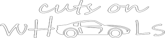

<mat-sidenav-container class="sidenav-container">
    <mat-sidenav #drawer class="sidenav" fixedInViewport [attr.role]="(isHandset$ | async) ? 'dialog' : 'navigation'" [mode]="(isHandset$ | async) ? 'over' : 'side'" [opened]="false">
        <mat-toolbar color="primary">Menu</mat-toolbar>
        <mat-nav-list>
            <a mat-list-item [routerLink]="['/about']" routerLinkActive="active" *ngIf="!userIsAuthenticated">About</a>
            <a mat-list-item [routerLink]="['/teams']" routerLinkActive="active" *ngIf="!userIsAuthenticated">Teams</a>
            <a mat-list-item [routerLink]="['/book-now']" routerLinkActive="active" *ngIf="!userIsAuthenticated">Book Now</a>
            <!-- <a mat-list-item [routerLink]="['/contact']" routerLinkActive="active" *ngIf="!userIsAuthenticated">Contact</a> -->
            <a mat-list-item [routerLink]="['/dashboard']" routerLinkActive="active" *ngIf="userIsAuthenticated">Dashboard</a>
            <a mat-list-item (click)="onLogout()" *ngIf="userIsAuthenticated">Logout</a>
        </mat-nav-list>
    </mat-sidenav>
    <mat-sidenav-content>
        <mat-toolbar color="primary" class="mat-elevation-z6">
            <button type="button" aria-label="Toggle sidenav" mat-icon-button (click)="drawer.toggle()">
              <mat-icon aria-label="Side nav toggle icon">menu</mat-icon>
            </button>
            <button mat-button [routerLink]="['/']"> &nbsp; &nbsp;cutsonwheel</button>

            <span class="cpls-spacer"></span>
            <button mat-button [routerLink]="['/about']" routerLinkActive="mat-accent" *ngIf="!userIsAuthenticated">About</button>
            <button mat-button [routerLink]="['/teams']" routerLinkActive="mat-accent" *ngIf="!userIsAuthenticated">Teams</button>
            <button mat-button [routerLink]="['/book-now']" routerLinkActive="mat-accent" *ngIf="!userIsAuthenticated">Book Now</button>
            <!-- <button mat-button [routerLink]="['/contact']" routerLinkActive="mat-accent" *ngIf="!userIsAuthenticated">Contact</button> -->
            <a mat-button [routerLink]="['/auth/login']" routerLinkActive="mat-accent" *ngIf="!userIsAuthenticated">Login</a>
            <a mat-button [routerLink]="['/auth/register']" routerLinkActive="mat-accent" *ngIf="!userIsAuthenticated">Register</a>

            <a mat-button [routerLink]="['/dashboard']" routerLinkActive="mat-accent" *ngIf="userIsAuthenticated">Dashboard</a>
            <a mat-button (click)="onLogout()" *ngIf="userIsAuthenticated">Logout</a>
        </mat-toolbar>
        <!-- Add Content Here -->
        <ng-content></ng-content>
    </mat-sidenav-content>
</mat-sidenav-container>